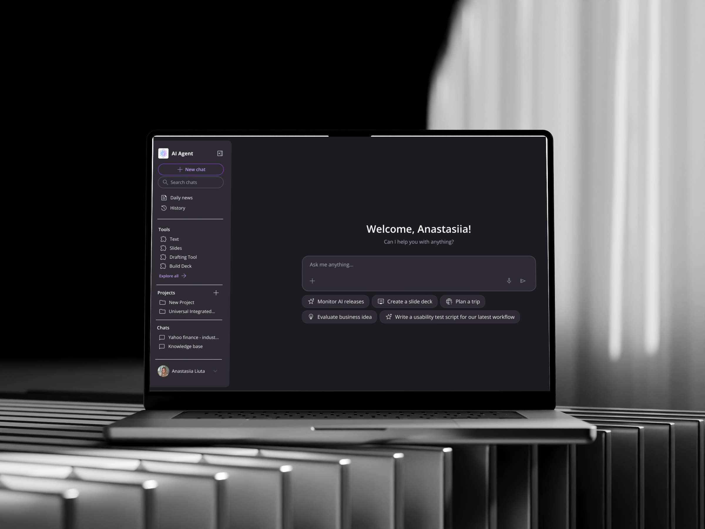
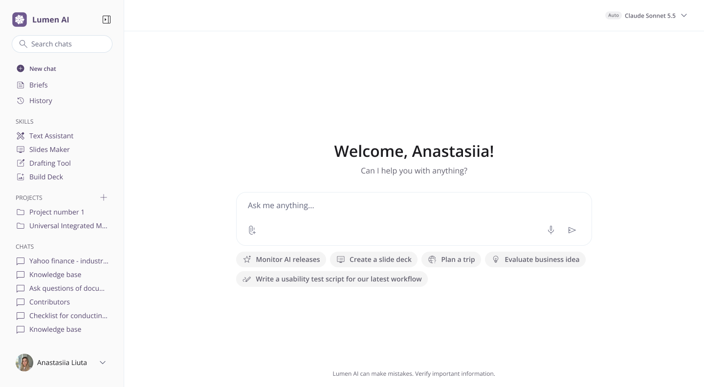
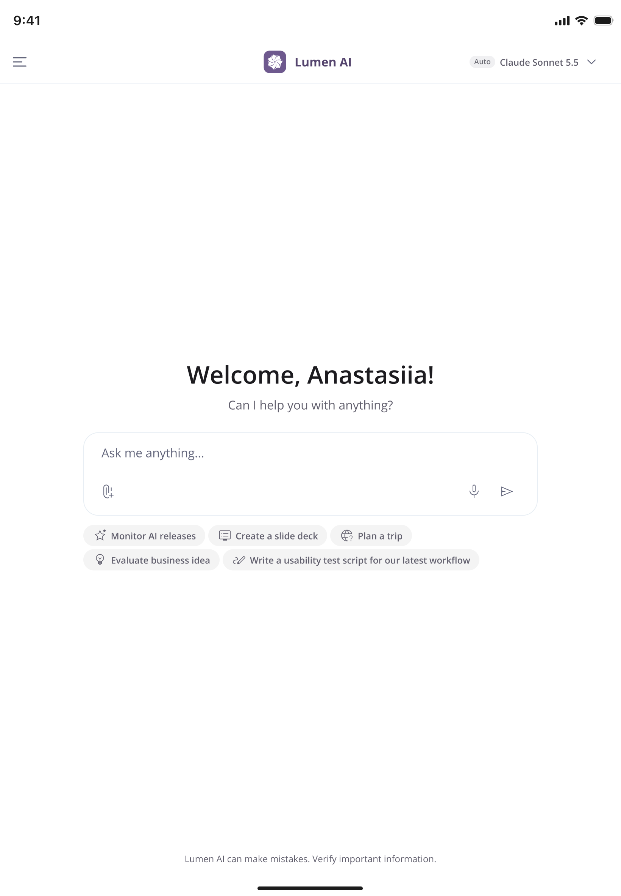
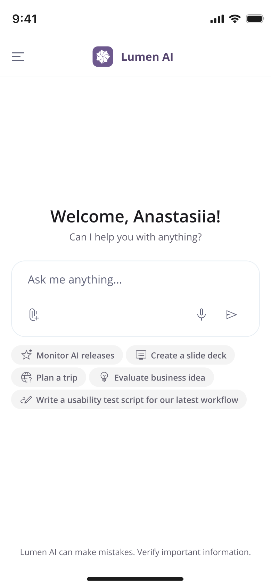
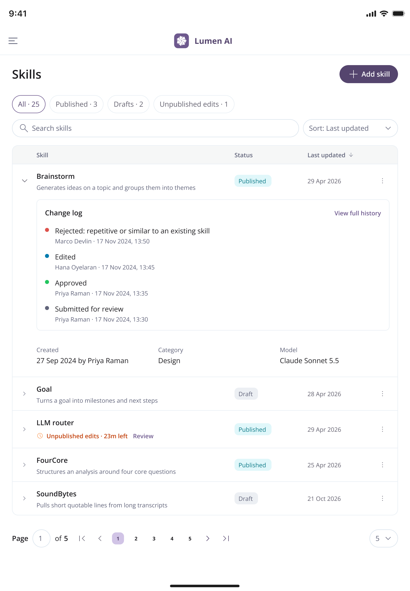
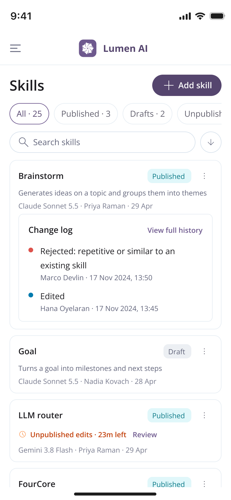

1
Daily briefs
People valued personalisation and running briefs on a schedule, but wanted fewer obstacles before the result. It wasn't clear how to open a finished brief or find earlier ones in history.
An internal AI workspace used across a company's teams. I designed the scenarios that turn it from a chat window into a daily working tool, and validated them with real users.
Lumen AI is an internal enterprise AI platform that a company's teams use in their day-to-day work: chat, persistent Projects, built-in tools and workflow templates in one workspace.
An AI tool inside a company only earns its place if people come back to it every day without having to think about how it works. My part was three scenario areas that carry exactly that risk: daily briefs that run on a schedule, creating and editing Skills (reusable AI capabilities), and managing roles.

I worked as the product designer in a cross-functional team with a product manager, engineers, QA and business stakeholders. I owned three scenario areas end to end, from research through prototypes and testing.
Insights came from research and testing sessions with users that ran alongside design, rather than from a separate discovery phase up front.
People valued personalisation and running briefs on a schedule, but wanted fewer obstacles before the result. It wasn't clear how to open a finished brief or find earlier ones in history.
Participants didn't tell saving a draft, saving changes and publishing apart. The product's model of a Skill's lifecycle didn't match how people expected it to behave.
Users skipped the collapsed explanations and didn't understand what each role was responsible for.
The scenarios I designed live inside one workspace, built to get people from a blank page to a finished document. The Welcome, Briefs and Skills screens below are from my Figma file. The rest of the product is under NDA, so those screens are described rather than shown.



A personal greeting and a single input, with suggested prompts underneath so the first move is never a blank page. Briefs and Skills sit at the top of the sidebar.
Tablet & phone. On iPad the sidebar folds behind a menu, and the greeting, prompt and suggestions stay in one centred column with the model picker in the top bar. On a phone the same column fills the width and the suggestions wrap onto new lines.

What's new today comes first, as cards for briefs with unread updates. Compact templates follow, for starting a new brief. Below them, every brief sits in one list with its schedule, last update and status, with search, filter and sort right above it, and each brief can be paused or edited without opening it.



Every Skill shows where it is in its lifecycle: Published, Draft, or published with unpublished edits, along with how long those edits are kept and a link to review them. Tabs with counts filter by status, and opening a row shows its change log, from submitted for review to approved, edited or rejected, so it's clear who changed what and when.
Tablet & phone. On iPad the table keeps the skill, its status and the last update, and the details move under the change log. On a phone each Skill becomes a card with its status at the top, the status tabs scroll sideways, and the change log opens inside the card.
A library of ready-made tasks, such as competitor tracking, roadmap planning and sales forecasting, so starting doesn't mean writing the perfect prompt first.
Related chats and files live inside a named Project instead of a flat history, so context stays attached to the work.
Text, Slides, a Drafting Tool and Build Deck turn a conversation into an actual document instead of leaving it stuck as chat.
Every chat stays findable through search, even one-off questions that were never filed under a Project.
This is an internal product under NDA, so I can't share usage numbers. These are the outcomes of my part of the work over July 2025 – October 2026.
Scenario areas
3
Scheduled daily briefs, creating and editing Skills, and managing roles, designed and iterated end to end.
Test formats
2
Moderated and unmoderated tests on Figma Make prototypes, with each round feeding back into the flows.
Key finding
Save ≠ publish
Surfaced the gap between the product's Skill lifecycle (draft, save, publish) and how users expected it to work.
Alignment
Regular workshops
Kept business stakeholders aligned on flows, testing plans and results throughout the project.
Testing showed me that what trips people up in an AI product often isn't the AI. It's the ordinary product logic around it: saving versus publishing, which role does what, where yesterday's brief went. That's where trust in the tool is won or lost.